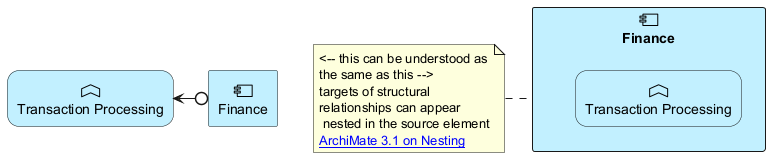

@startuml
skinparam <<verb>> {
roundCorner 25
}
sprite $bFunction jar:archimate/business-function
sprite $aComponent jar:archimate/application-component
rectangle "Finance" as F <<$aComponent>> #Application
rectangle "Transaction Processing" as TP <<$bFunction>><<verb>> #Application
F 0-left-> TP
rectangle "Finance" as F1 <<$aComponent>> #Application {
rectangle "Transaction Processing" as TP1 <<$bFunction>><<verb>> #Application
}
note left of F1
<-- this can be understood as
the same as this -->
targets of structural
relationships can appear
nested in the source element
[[https://pubs.opengroup.org/architecture/archimate3-doc/chap05.html#_Toc10045311 ArchiMate 3.1 on Nesting]]
end note
' might we be able to state something like... F 0-nest-> TP to mean the same as F 0-left-> TP but have it place TP inside F?
' then, if I want to choose to switch from "F *-left-> TP" to "F 0-nest-> TP" is would be much easier.
' similarly there would be a "xx *-nest- xx", "xx o-nest- xx", "xx ..left..|> xx", for the other structural relationships..
' that would all nest the target in the source element.
@enduml